ggplot2 is powerful, but even a simple figure quickly costs a dozen
lines: reshape the data to long format, map the aesthetics, pick a
geometry, set the labels, the theme, the palette, the legend…
kggplot does all of this in one short call, and the
result stays composable: a kggplot object is a
specification that you can extend, restyle and combine before
it is turned into a regular ggplot.
One call
kggplot(
iris, "Sepal.Length", "Sepal.Width", color = "Species",
title = "Iris", theme = "bw"
)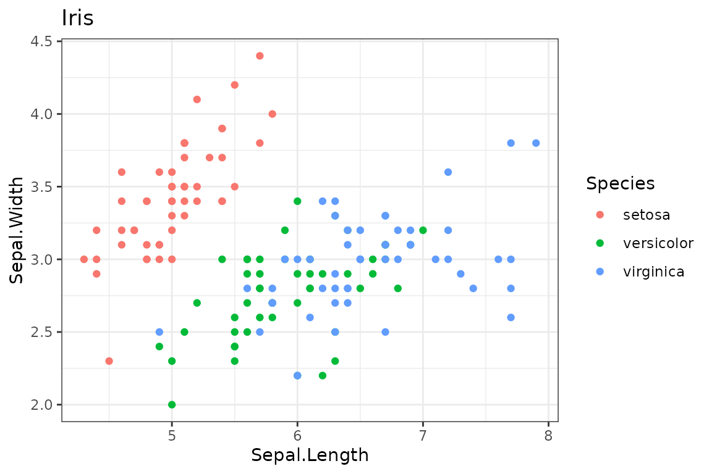
The arguments are column names. Axis and legend titles default to the
variable names, and the plot type is guessed from the data (here a
scatter plot because x and y are numeric).
Everything a single call handles:
| Concern | Argument | Example |
|---|---|---|
| Input data |
data (S3 generic as_kdata()) |
data frame, tibble, ts, matrix, vector, named list |
| Reshaping | y |
y = c("a", "b") or y = "all": long format,
colour by series |
| Variables | x y color fill group size shape alpha linetype label |
column names; I("red") for a fixed value |
| Plot type | type |
"point", "line", "bar",
"density", "smooth"… (guessed if omitted) |
| Titles | title subtitle caption xlab ylab labels |
NA removes a title |
| Theme and palette | theme base_size palette |
registered names, any theme_<name>(), ggplot2
themes |
| Legend | legend |
"bottom", "none",
c(x, y)
|
| Facets | facet facet_args |
"Species", c("row", "col"),
~ a, ".series"
|
| Geometry options | ... |
bins = 10, linewidth = 1,
width = .5
|
Several variables at once
Give several columns to y (or "all" for
every column but x): kggplot stacks them in long format and
colours them by series. The pseudo-column ".series" can be
mapped to any aesthetic or used as a facet.
kggplot(
iris, "Sepal.Length", c("Sepal.Width", "Petal.Width"),
type = "point", title = "Two variables, one call"
)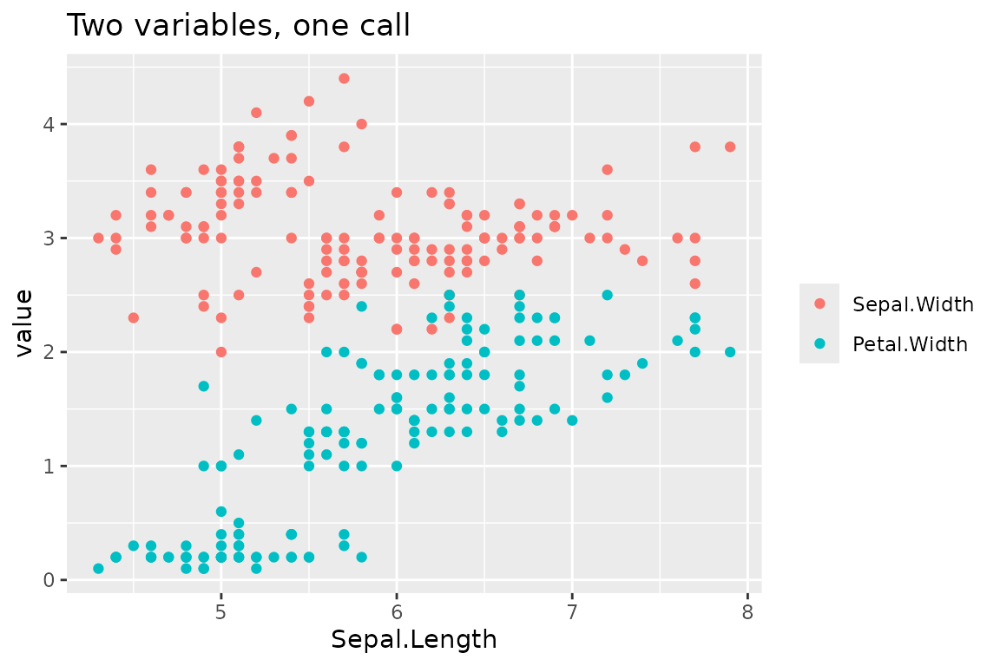
kggplot(
iris, "Sepal.Length", c("Sepal.Width", "Petal.Length", "Petal.Width"),
type = "smooth", facet = ".series", facet_args = list(scales = "free_y"),
legend = "none"
)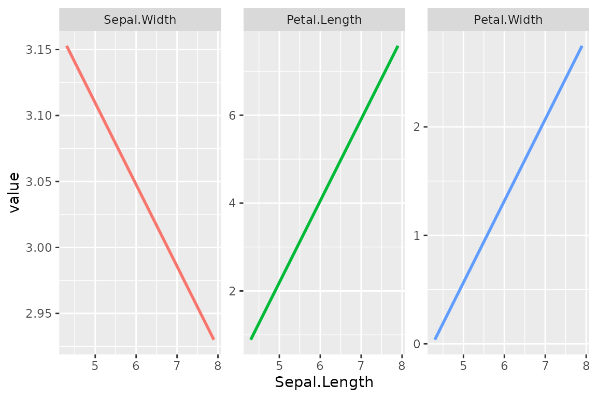
Other inputs
as_kdata() converts the input to a data frame, so time
series, matrices and plain vectors can be plotted directly:
kggplot(AirPassengers, title = "Air passengers", theme = "minimal")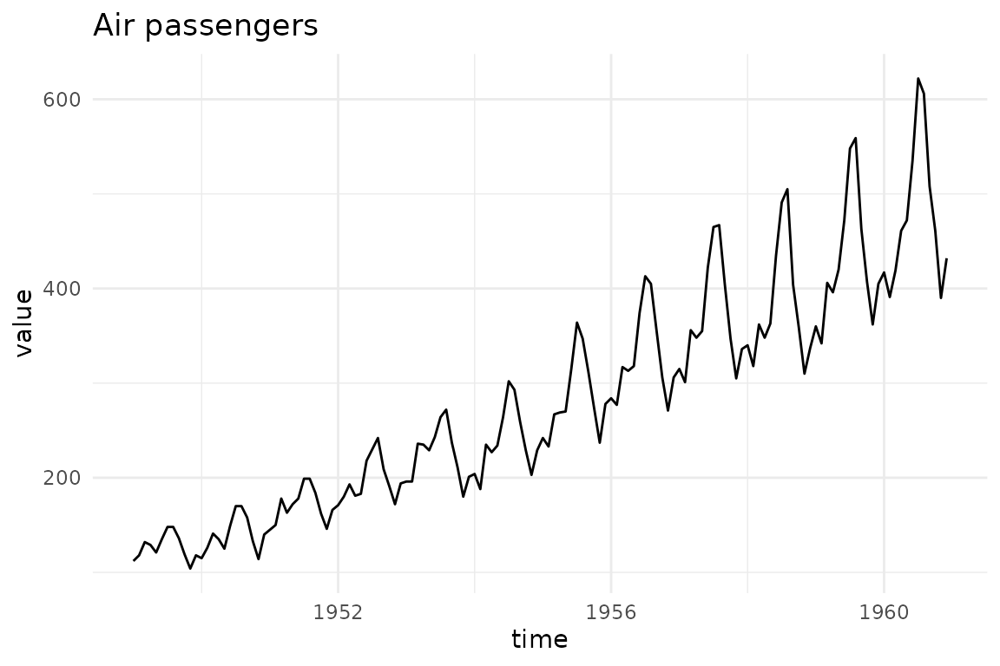
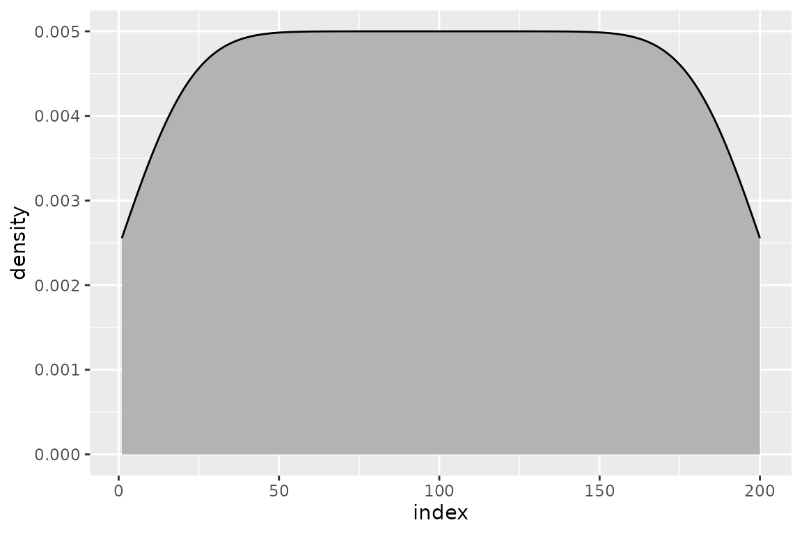
Plot types
When type is omitted it is guessed: a line for dates and
time series, points for a numeric x and y,
bars for a categorical x, a histogram or counts for a lone
x. kgg_types() lists the available types.
kgg_types()
#> [1] "point" "jitter" "line" "path" "step"
#> [6] "area" "smooth" "text" "bar" "col"
#> [11] "bar_dodge" "count" "histogram" "density" "ecdf"
#> [16] "cumFreq" "boxplot" "violin" "convexhull"
kggplot(
mtcars, "cyl", fill = "gear", type = "count", palette = "okabe_ito",
title = "Cars by cylinders and gears"
)
#> Warning: The following aesthetics were dropped during statistical transformation: fill.
#> ℹ This can happen when ggplot fails to infer the correct grouping structure in
#> the data.
#> ℹ Did you forget to specify a `group` aesthetic or to convert a numerical
#> variable into a factor?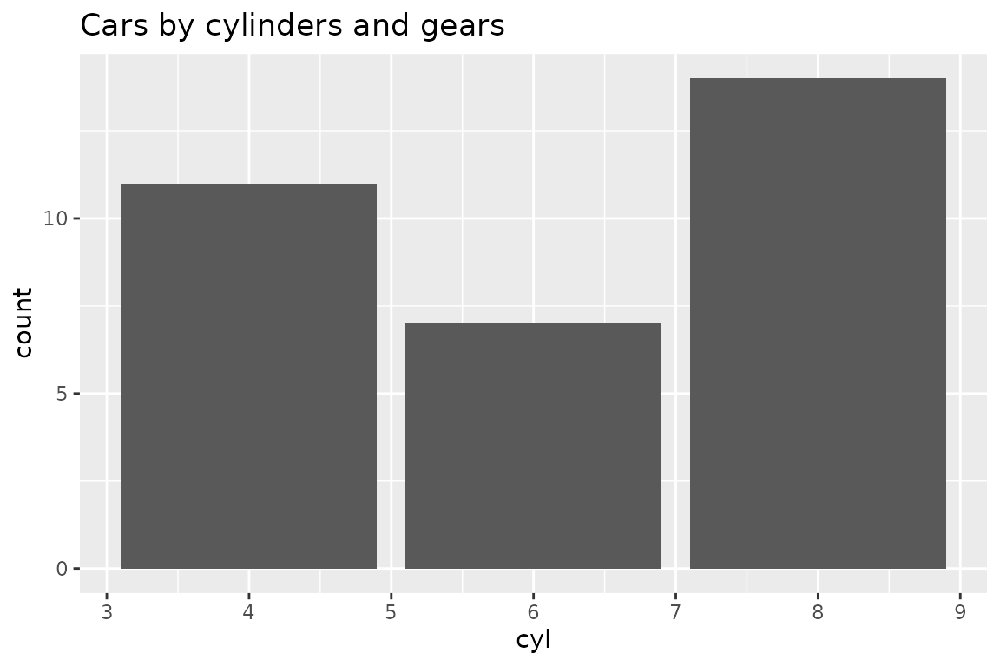
Titles, legend and facets
kggplot(
iris, "Sepal.Length", "Sepal.Width", color = "Species",
title = "Iris", subtitle = "Sepals", caption = "Source: datasets::iris",
xlab = "Length (cm)", ylab = "Width (cm)", labels = list(color = "Species"),
legend = "bottom", facet = "Species", theme = "bw", base_size = 11
)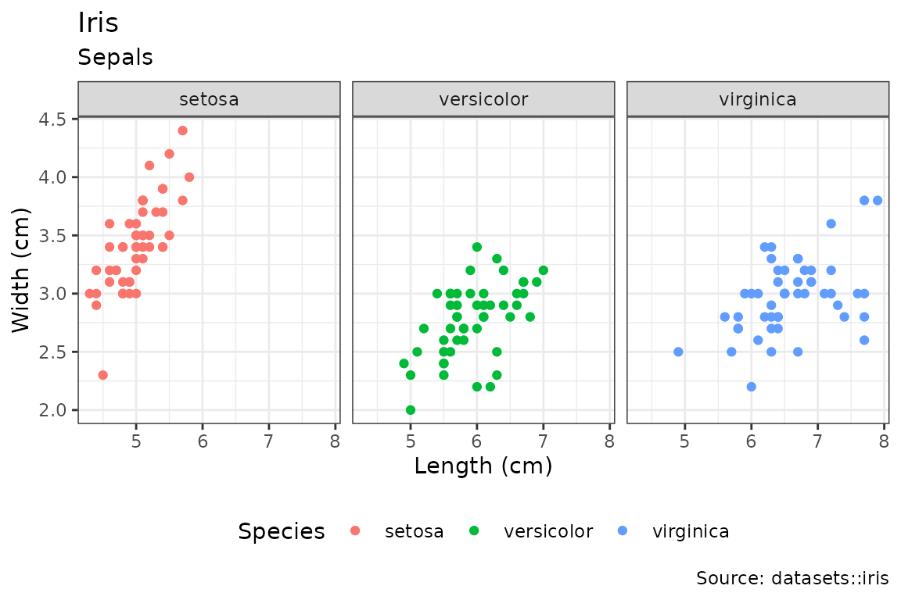
A character value that is not a column, given to color,
fill or group, creates a legend entry
(color = "Observed"). Use I("red") for a fixed
colour.
Themes and palettes
A theme bundles a ggplot2 theme and a colour palette under one name.
kgg_themes() and kgg_palettes() list the
registered ones; any theme_<name>() function on the
search path also works (theme = "light").
kggplot(
iris, "Sepal.Length", "Sepal.Width", color = "Species", facet = "Species",
theme = "inrae"
)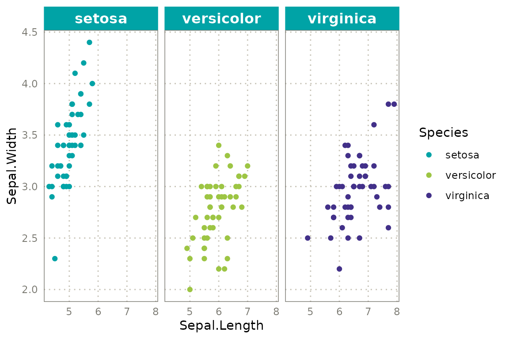
The built-in "inrae" theme uses the colours of the INRAE
graphic charter. The charter sets Raleway for titles and Avenir Next Pro
Condensed for text; these fonts must be installed, so kggplot forces
none. Opt in with:
options(
kggplot.title_family = "Raleway",
kggplot.base_family = "Avenir Next Condensed"
)Set options(kggplot.theme = "inrae") to make a theme the
default for the session.
Composing plots
Because a kggplot is a specification, plots can be
combined. Layers share one palette and one legend, so a level keeps its
colour whatever layer it comes from.
obs <- data.frame(t = 1:10, v = cumsum(rep(1, 10)))
sim <- data.frame(t = 1:10, v = cumsum(rep(1.2, 10)))
kggplot(obs, "t", "v", color = "Observed", type = "point", theme = "inrae") +
kggplot(sim, "t", "v", color = "Simulated", type = "line")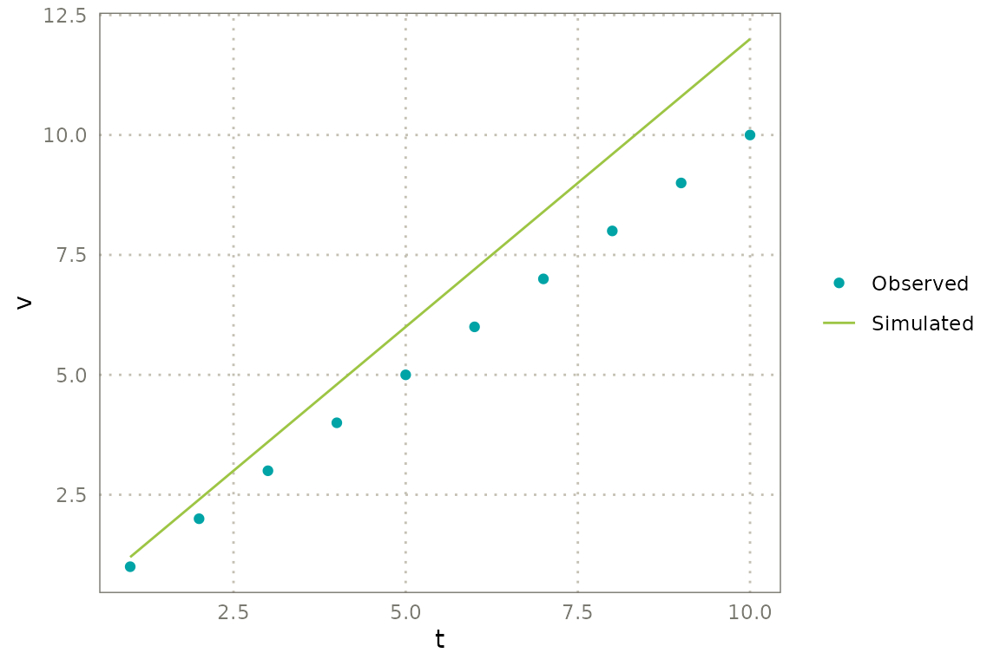
kggplot(p, sim, ...) and
kgg_add(p, sim, ...) do the same as + and
inherit the mappings of the first layer when the columns exist in the
new data. Without new data, kgg_add() reuses the first
layer’s data, which is handy for adding a smoother:
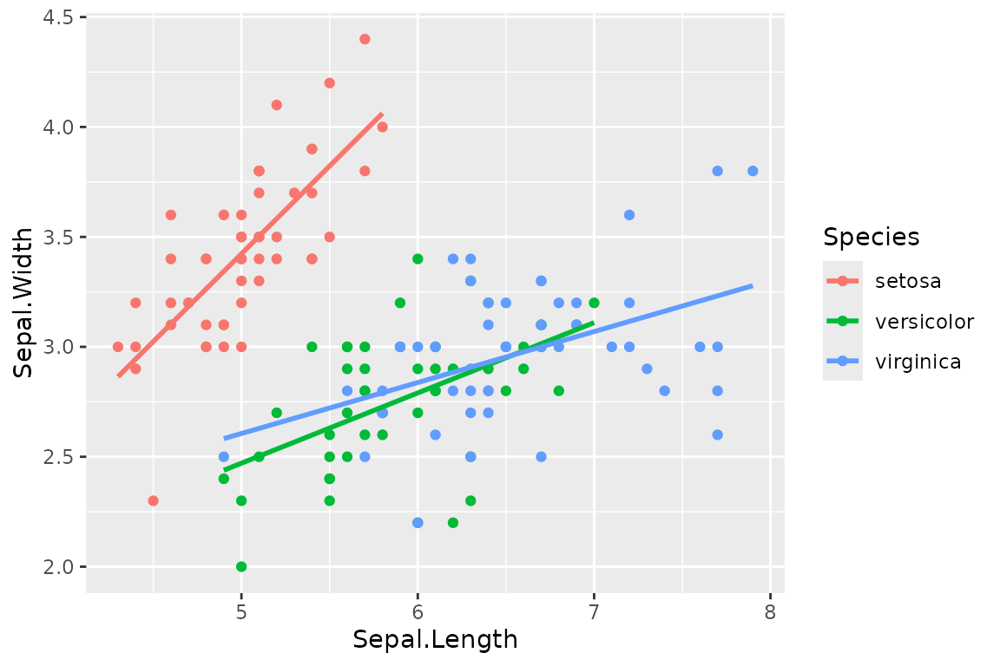
Any ggplot2 component can be added with +; it is applied
last:
kggplot(iris, "Sepal.Length", "Sepal.Width", theme = "minimal") +
ggplot2::geom_hline(yintercept = 3, linetype = "dashed") +
ggplot2::scale_x_log10()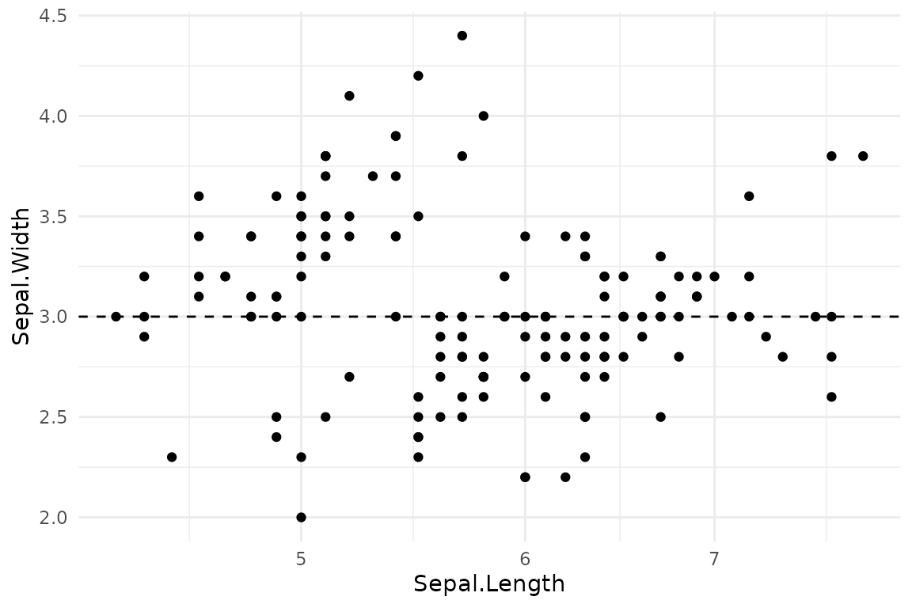
Pipe-friendly modifiers change one thing at a time and leave the original untouched:
p <- kggplot(iris, "Sepal.Length", "Sepal.Width", color = "Species")
p |>
kgg_labs(title = "New title", x = "Sepal length") |>
kgg_theme("bw", base_size = 14) |>
kgg_facet("Species", scales = "free") |>
kgg_legend("bottom")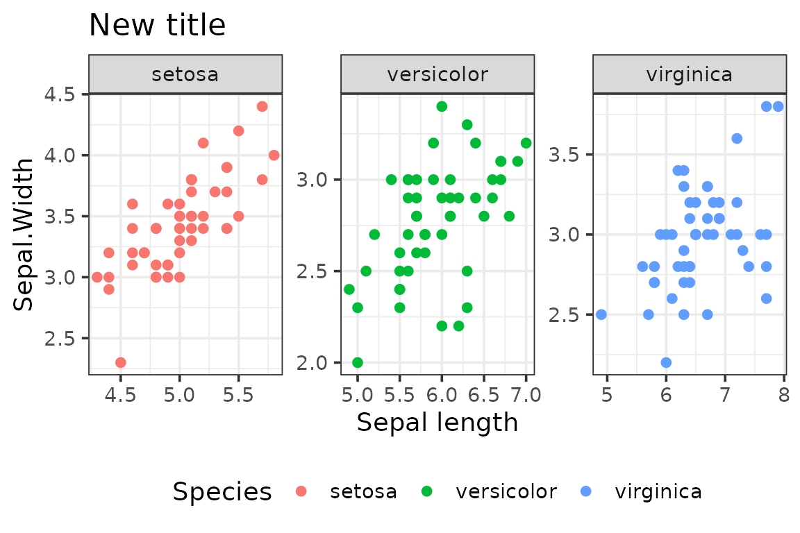
Going back to ggplot2
as_ggplot() renders the specification into a regular
ggplot object, for anything that is easier in plain
ggplot2. kgg_save() and ggplot2::autoplot()
also accept a kggplot.
Extending kggplot
Everything is S3 or a registry:
-
New input class: define an
as_kdata()method returning a data frame. -
New plot type:
kgg_register_type()maps a name to a geom function. -
New theme or palette:
kgg_register_theme()andkgg_register_palette().
kgg_register_palette("traffic", c("#2ecc71", "#f1c40f", "#e74c3c"))
kgg_register_theme("traffic", ggplot2::theme_bw, palette = "traffic")
kgg_register_type("hollow", ggplot2::geom_point, params = list(shape = 1))
kggplot(
iris, "Sepal.Length", "Sepal.Width", color = "Species",
type = "hollow", theme = "traffic"
)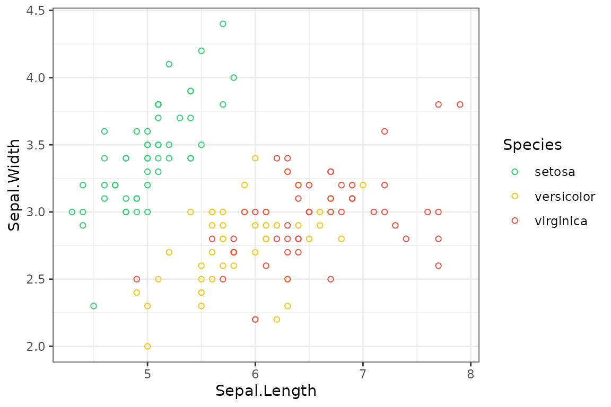